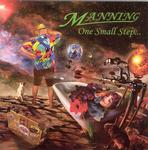

| Artist: | Manning |
| Title: | One Small Step... |
| Label: | Progrock PRR 139 |
| Length(s): | 57 minutes |
| Year(s) of release: | 2006 |
| Month of review: | [12/2006] |
| 1) | In Swingtime | 4.30 |
| 2) | Night Voices | 5.56 |
| 3) | No Hiding Place | 9.33 |
| 4) | The Mexico Line | 7.02 |
One Small Step...Part (I-VIII)
| 5) | Star Gazing | 4.34 |
| 6) | For Example... | 3.03 |
| 7) | At The End Of My Rope | 2.04 |
| 8) | Man Of God | 2.36 |
| 9) | A Blink Of An Eye | 4.56 |
| 10) | God Of Man | 2.30 |
| 11) | Black And Blue | 7.26 |
| 12) | Upon Returning | 3.28 |
Night Voices opens with dancing string synths, with quite a folky feel, and ballad like lyrics. The music stays subdued and subtle with a strong ear for melody, with an excellent melody reserved for the chorus, while the bridge has quite a different one, and in which a horn section enters the picture. But the music stays soothing. A Spanish style acoustic solo brings in some extra variation.
No Hiding Place continues the combination of acoustic guitar and symphonic and melodic elements, but compared to Night Voices in an up-beat fashion. This is quite a lenghty track with a small place of rest in the middle, as the song gathers its strengths to go all out again. However, Manning decides to go about it differently: we first obtain a very ELPish solo, followed by an electric guitar solo that moves from ear to ear. This is certainly very proggy with shards of sax intermixed and everything sounding rather free form and uncontrolled. At the end, the catchy chorus returns.
The Mexico Line opens with a countryish twang. The band is going acoustic, and quite a bit of violin is thrown in. For the remainder, the vocals of Manning are the dominant element. He has a bit of a tear in his voice this time. Their is space for some sax again, this time as a short solo spot, while the ending is dominated by sax and organ going at it together.
The epic of the album is One Small Step..., about thirty minutes long and divided into eight parts. Star Gazing opens with fast acoustic guitars and the melancholy voice of Manning. The vocal melody is again a good one, very recognizable. On For Example... Manning seems to become a bit angrier and the acoustic guitar turn more percussive, and indeed lyrically we have come to a less happy place (regarding the human race). The music is still acoustic guitar and vocals. At The End Of My Rope simply follows the line set, but with different vocal melodies and maybe a twinkle of keyboards, which set in more strongly at the end, serving as a string orchestra. Man Of God brings us back to the acoustically dominated vocally focused music, the pace stays low. The chorus on the other hand, is very melodic and instantly recognizable. There is even some flute here, in the instrumental sections in between, alternated with some sensitive violin playing. A Blink Of An Eye continues the somewhat somber but relaxed song with a strong accent on flute and some organ and violin still in the back. The violin playing reminds a bit of Stuart Gordon. The music is extremely romantic on this one. In God Of Man the melody of Man Of God returns, with the excellent vocal melody reigning, and the acoustic guitar in the backdrop, while the violin adds a sense of melancholy (as if the song needed it). On Black And Blue we move into a different field: that of a kind of blues in which sax wails along with the bluesy guitar, and the flute fiddles in the back. The vocal melodies are quite different, and although the music stays slow and languid, we finally do have some drums here. Upon Returning closes the epic and the album down in style.